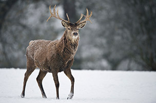
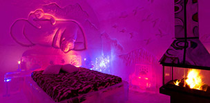
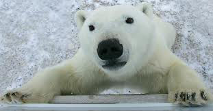

All Canadian Winter Experiences
This article is a list of amazing adventures that could be great additions to anyone's bucket list. They're all one-of-a-kind travel experiences based in Canada; this edition will be specifically winter activities.
Spend a Night in an Ice Hotel
The Hotel de Glace is located outside Quebec City and is North America's only ice hotel. It has five hundred tons of ice, 15,000 tons of snow, and 36 rooms. It takes 50 people about six weeks to build the hotel each winter, crafting its rooms, bar, chapel, passageways, slides, and chandeliers. Lit with atmospheric non-heat-emitting LED lights, you'll get plenty of ambience if not warmth standing next to the double-glazed fireplaces. The interior temperature of -5oC will chill your bones, but the romance and creative vision of the hotel will warm your heart. At around 9 p.m., day visitors are ushered out and the over night guests gather in the Celsius, a heated building, for the briefing. If you're going to spend the night in a popsicle, the goal is not to become one in the morning. All guests are required to sit through a training session. All guests are assigned lockers in the Celsius; nothing goes into your room except for your pyjamas, boots, and outdoor jacket. Each bed sits on a piece of wood atop blocks of ice, with a carved ince headboard and striking sculptures in the 1.2metre-thick walls. You are shown how to wrap yourself in the cocoon sleeping bags, which are designed for -30oC conditions and therefore should have no problem keeping warm at night. Up for the chilly night? See the list below for the website directory to get your vacation started in the ice hotel.
See Polar Bears from a Tundra Buggy
Experience watching the largest carnivore on Earth in it's natural habitat; it will sure light a fire in your soul that will make you forget about your nose turning into an icicle. Each October and November, hungry bears along the southwest coast of Hudson Bay emerge from a state scientists call walking hibernation, reducing their metabolisms while waiting for the ice to freeze. When it does, they'll head north and break their long summer fast. The 900 plus bears annually migrate through the southerly parts, near the small community Churchill, and it's not uncommon for bears to wander directly into town. Surrounded by bear traps, Churchill is closely monitored on camera, and famously has a jail for offending bears that continue to pose a problem. Considering Churchill's small population compared to the hundreds of hungry bears, it is remarkable there hasn't been any human fatalities for decades. In fact, Churchill has become a model of how humans and wildlife can share the same landscape and live together. In the Tundra Buggy, you'll travel ninety minutes to Frontier North Tundra Buggy Lodge. The 40 passenger buggy sits on 1.7 metre tires above a customized fire truck chassis. The experience is a three day long bear watch, where you stay snug in an impressive hundred-metre long lodge on wheels. You spend 8 hours a day roaming the tundra and are treated to a polar bear extravaganza. Feeling like a Canadian bear watch experience? View the list below to set up your trip to have an up-close experience with polar bears.
Skate the Rideau
In the captial of Canada, Ottawa holds the great 202-kilometre long waterway which is the very reason Canada is Canada and not part of the United States. The military-built engineering achievement allowed the British to defend the country again attaking Americans. Some historians believe that if the canal didn't exist, neither might Canada. What's even cooler is the fact that every winter the Rideau turns into the world's largest skating rink. At 7.8 Kilometres, the skateable section that cuts through Ottawa is equivalent to ninety Olympic-sized hockey rinks. If you enjoy skating, try visiting the Rideau at midnight when there is barely anyone else on the ice, and go as fast as you can; the length of the rink will allow you to go as fast as you can for as long as you can. And when you're done skating during the day, enjoy a nice warm beaver tail along with a delicious cup of hot chocolate - the perfect Canadian treat. Visist the list below to find out where to find Canada's largest skating rink.